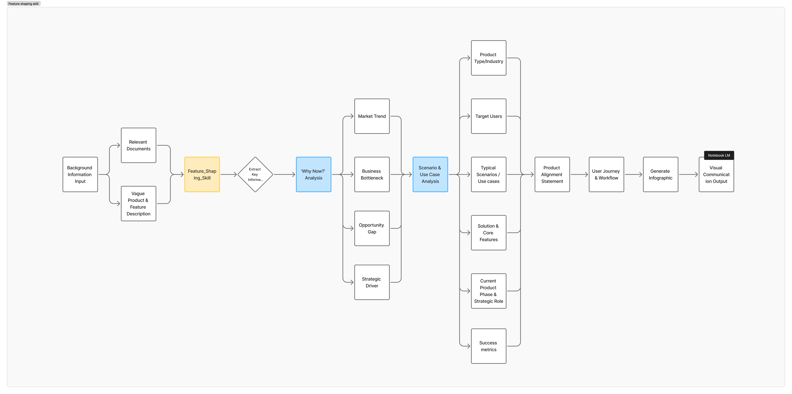
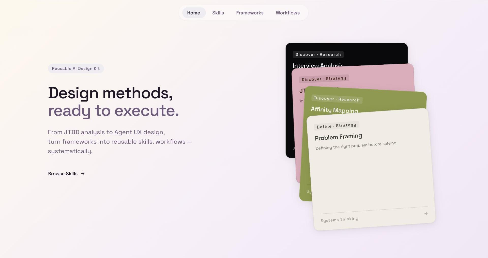

Play — side projects and visual experiments.
Visual Exploration
Created with Gemini


Feature Shaping
Skill created with CursorA Cursor skill that shapes a rough feature idea into a shareable product brief — walking from background context through Why Now, scenarios and use cases, and product alignment, down to a visual communication output anyone can react to.

Vibe Coding
Vibe coded in 1 dayBorn from a simple need — one place to collect and find the design methods and skills I keep reaching for. I used it as a test run for the full vibe-coding loop, from first screen to a live site in a day. Not a deeply-researched product: the point was just to prove the process end to end.
